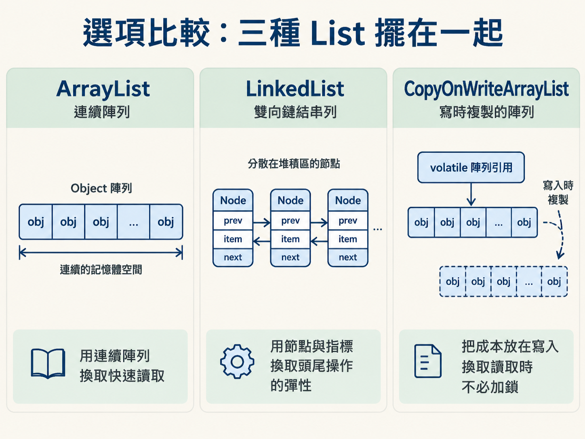
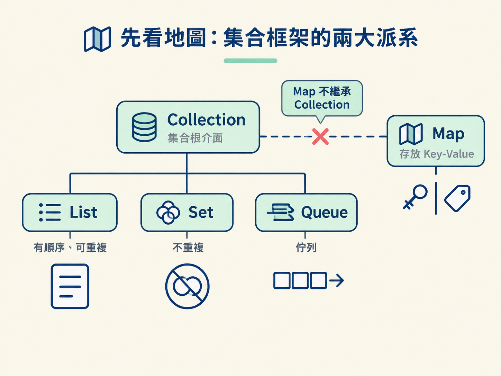
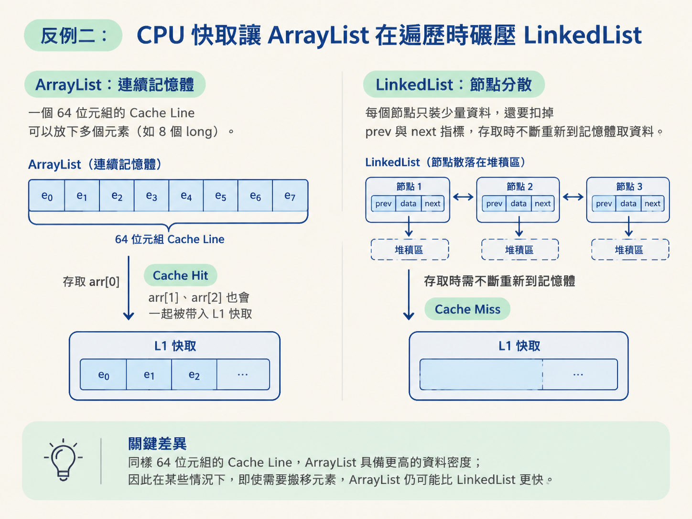
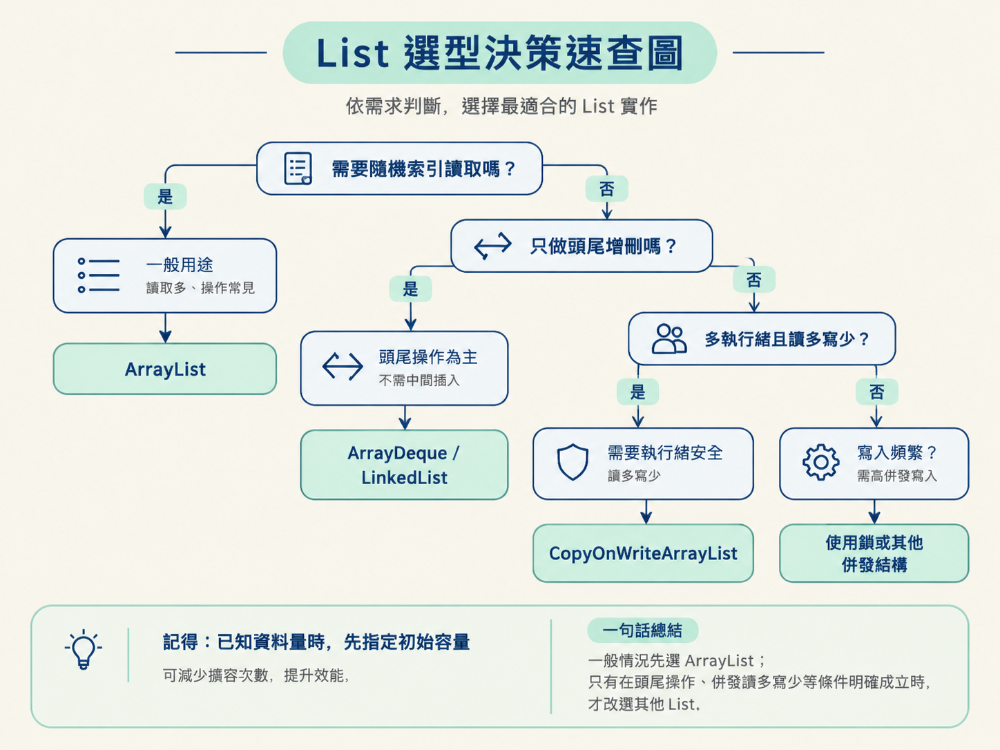

你可能聽過這句經典口訣：「ArrayList 查詢快、增刪慢；LinkedList 增刪快、查詢慢。」於是有人把專案裡需要頻繁插入的 List 全部換成 LinkedList，結果上線後程式不只沒有變快，記憶體占用還增加了。
教科書沒有說錯，只是那句話描述的是理想化的複雜度。真實程式還會受到資料配置、CPU 快取與記憶體存取方式影響。就像兩條路的地圖距離一樣，紙上看起來較短的路，實際開車時可能因為路況更慢。
這一課要把 List 的選擇整理成一套可以當場使用的判斷方式。我們會先比較三種常見的 List，再用幾個問題判斷需求，最後看哪些反例會讓「LinkedList 增刪快」這類直覺失效。學完後，你應該能看著一段程式碼，說出為什麼該選某個 List，而不只是背口訣。
能在 ArrayList、LinkedList 與 CopyOnWriteArrayList 之間做出有理由的選擇，並解釋擴容成本與 CPU 快取如何造成實際效能差異。
| 維度 | ArrayList | LinkedList | CopyOnWriteArrayList |
|---|---|---|---|
| 底層結構 | 連續的 Object 陣列 | 雙向鏈表（Node 含 prev/next） | volatile 陣列引用 + 寫時複製 |
| 隨機存取 | O(1)，算偏移量直達 | O(N)，從頭或尾逐個找 | O(1)，讀取無鎖 |
| 尾部新增 | 均攤 O(1) | O(1) | O(N)，每次複製整個陣列 |
| 中間插入／刪除 | O(N)，需搬移後續元素 | 指標操作 O(1)，但按索引要先花 O(N) 找位置 | O(N)，複製整個陣列 |
| 記憶體 | 較省，元素連續 | 較耗，每節點多兩個引用（64 位元系統約 16 位元組） | 寫時同時存在新舊兩份陣列 |
| 執行緒安全 | 不安全 | 不安全 | 安全（讀寫分離） |
| 適用場景 | 通用首選，查多改少 | 頭尾頻繁增刪（其實更常用 ArrayDeque） | 讀多寫少，如白名單、監聽器列表 |
先抓住這張表的核心：ArrayList 用連續陣列換取快速讀取，LinkedList 用節點與指標換取頭尾操作的彈性，而 CopyOnWriteArrayList 則把成本放在寫入，換取讀取時不必加鎖。

Java 集合框架可以先分成兩大根介面。這個分法比死背每個實作類別更重要。
Collection 負責存放「單一物件」，下面有三個主要分支：List 有順序、允許重複，也能依索引存取；Set 不允許重複；Queue 則是佇列，常見概念是先進先出。
Map 是另一派，負責存放 Key-Value。Map 不繼承 Collection，這是很常見的考題陷阱。

| 派系 | 代表 | 底層結構 | 一句話定位 |
|---|---|---|---|
| List | ArrayList | 動態陣列 | 隨機存取快，最常用 |
| List | LinkedList | 雙向鏈表 | 頭尾增刪快，查詢與記憶體吃虧 |
| List | CopyOnWriteArrayList | 寫時複製的陣列 | 讀多寫少的執行緒安全 List |
| Set | HashSet / TreeSet | 雜湊表 / 紅黑樹 | 去重；後者能自動排序 |
| Queue | PriorityQueue / ArrayDeque | 二元堆 / 雙端佇列 | 優先級與 FIFO 場景 |
| Map | HashMap / TreeMap / ConcurrentHashMap | 陣列+鏈表+紅黑樹 / 紅黑樹 | 鍵值查找；後兩者分別為有序與執行緒安全 |
還有兩個容易混淆的名字。Collections（有 s）不是集合，而是操作集合的工具類別，提供 sort、shuffle 等靜態方法；Iterator 則是遍歷集合的標準方式。至於 HashMap 與 ConcurrentHashMap 的內部結構，會在下一節再詳細拆解。
比起背「LinkedList 增刪快」，更可靠的方法是把需求拆成幾個可以回答的問題。
ArrayList。它的 get(i) 是 O(1)，而 LinkedList 需要從頭或尾逐步尋找，成本是 O(N)，資料量越大，差距越明顯。LinkedList 的指標操作才有意義。如果你指定的是「第 i 個位置」，一樣要先花 O(N) 找到那個位置。ArrayList 與 LinkedList 都不能直接當成執行緒安全的集合使用。讀多寫少時可以考慮 CopyOnWriteArrayList；如果寫入頻繁，就要改用鎖或其他併發結構。ArrayList 時指定初始容量，例如 new ArrayList<>(1000)，減少陣列擴容與資料搬移的次數。鏈表在「已經拿到目標節點」的前提下，插入只需要調整幾個指標，因此是 O(1)。但實務上常見的寫法通常是「在第 i 個位置插入」，而不是手上已經有那個節點。
這時候，LinkedList 必須先從頭或尾走過去，找到第 i 個節點，這段定位成本是 O(N)。所以它真正適合的是頭尾操作；而在只需要把資料當成佇列或堆疊使用的情況，ArrayDeque 往往更合適。
這正是實際效能差這麼多的底層原因。CPU 不會每次只向記憶體索取一個位元組，而是一次載入一整塊連續資料，通常是 64 位元組，這一塊資料稱為一個 Cache Line。
ArrayList 的元素位在連續空間中。當 CPU 載入 arr[0] 時，附近的 arr[1]、arr[2] 也可能一起被帶進 L1 快取。後續存取就有機會直接從快取取得，不必再次等待較慢的記憶體。
LinkedList 則不同。它的節點是分散在堆積區裡、透過 new 建立的物件。存取完 node1 後，node2 可能位在很遠的地方，CPU 只能重新到較慢的記憶體取資料，造成大量 Cache Miss，也就是必須停下來等待資料。
資料密度也會放大這個差距。同樣一個 64 位元組的 Cache Line，ArrayList 可以放下 8 個 long；LinkedList 還要扣掉每個節點的 prev 與 next 兩個指標，可能只放得下 2 個資料。這也是為什麼在真實機器上，即使 ArrayList 需要搬移元素，某些情況下仍然可能比 LinkedList 更快。

CopyOnWriteArrayList 的寫入流程是：先加鎖，複製整個陣列，在新陣列上修改，最後把 volatile 引用指向新陣列。讀取則可以直接使用目前的陣列，不需要加鎖。
這種設計很適合讀多寫少的場景，例如白名單或監聽器列表。但如果資料量很大、寫入又頻繁，每次寫入都複製整個陣列，會同時增加複製成本與記憶體壓力，還可能不斷觸發 GC，最後拖慢整個系統。
它的迭代器在建立時就握住舊陣列的快照，所以遍歷時不會拋出 ConcurrentModificationException。代價是，遍歷過程可能讀到已經被刪除的舊資料。這就是它所謂的「弱一致性」：讀取穩定，但不保證看見最新內容。
因此，CopyOnWriteArrayList 是針對特定讀寫比例做出的取捨，不是所有併發場景都能直接套用的萬用解。
| 你的情況 | 選誰 |
|---|---|
| 一般用途，會用索引讀取，單執行緒 | ArrayList（首選） |
| 只在頭尾頻繁插入刪除，當佇列／堆疊用 | ArrayDeque，其次才是 LinkedList |
| 多執行緒、讀遠多於寫，能接受短暫讀到舊值 | CopyOnWriteArrayList |
| 多執行緒、寫入也很頻繁 | 不要用 COW，改用鎖或其它併發結構 |
| 已經知道資料量上限 | 建構時指定初始容量，減少擴容 |
集合框架先分成 Collection 與 Map 兩派，Map 不繼承 Collection。List 的選擇不能只背「查詢快」或「增刪快」：ArrayList 用連續陣列換來 O(1) 隨機存取與較高的快取命中率，但中間增刪需要搬移元素；LinkedList 的指標操作只有在頭尾或已經取得節點時真正划算，按索引操作仍要先花 O(N) 定位，節點分散也會帶來 Cache Miss 與額外記憶體開銷；CopyOnWriteArrayList 讀取無鎖、寫入時複製，適合讀多寫少，但必須接受弱一致性與較高的寫入成本。若事先知道資料量，建立集合時指定初始容量，是減少擴容的實用習慣。
可以把最後的決策規則記成一句話：一般情況先選 ArrayList；只有在頭尾操作、併發讀多寫少等條件明確成立時，才改選其他 List。

熟悉 List 之後，下一個問題自然會出現：那張負責鍵值查找的 Map，內部到底長什麼樣子？下一節會打開 HashMap 這個黑盒子，看看它從 JDK 1.7 到 1.8 的結構如何改變，以及紅黑樹、負載因子這些設計是怎麼來的。